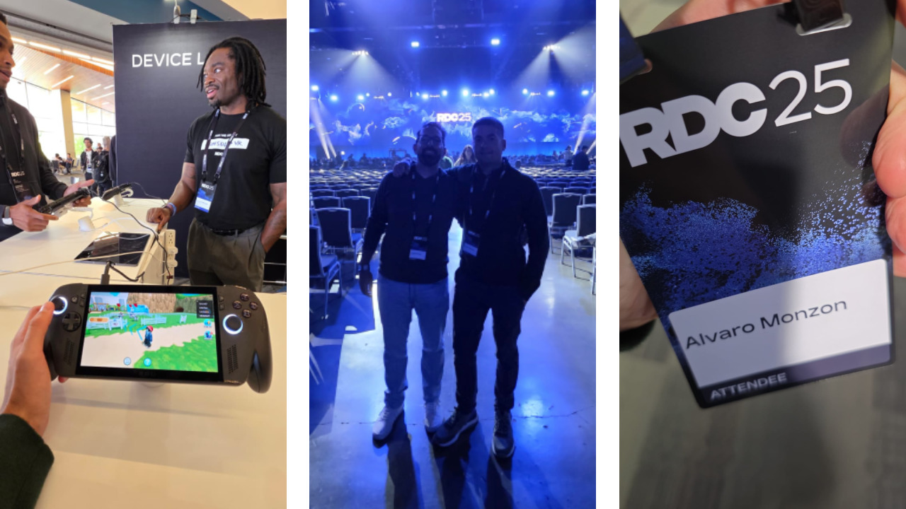
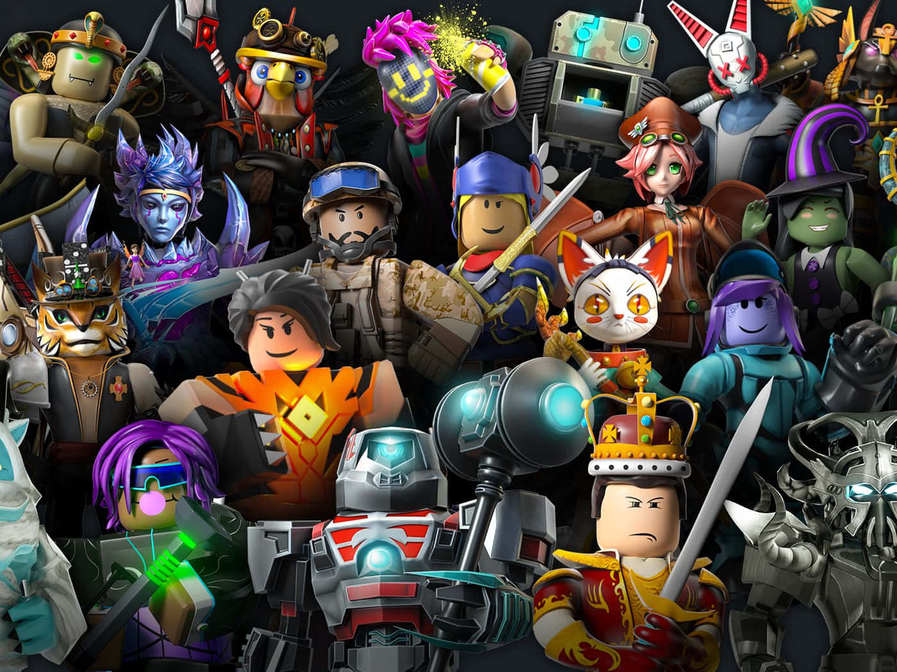

Accesorios
Sombreros, cabello, alas y objetos decorativos para personalizar avatares.
Millones de personas juegan, crean y se organizan dentro de Roblox. Esta es la gente que hace que la plataforma crezca todos los días.
Los usuarios y los creadores fueron fundamentales para el crecimiento de Roblox: transformaron la plataforma de un simple espacio para jugar en una comunidad donde las personas también pueden crear, compartir y generar ingresos.
A diferencia de otros videojuegos tradicionales, Roblox no depende únicamente de un estudio central para producir contenido. Su motor de crecimiento es la propia comunidad: millones de personas que diseñan experiencias, crean objetos virtuales y generan contenido que otros usuarios consumen a diario.
Esto convierte a Roblox en un servicio tanto como en un juego.
El programa de Contenido Generado por el Usuario (UGC) permite a diseñadores independientes crear y vender accesorios, ropa y objetos para los avatares. Esto dio lugar a una verdadera economía creativa dentro de la plataforma.
Sombreros, cabello, alas y objetos decorativos para personalizar avatares.
Camisetas, pantalones y trajes diseñados por miembros de la comunidad.
Los creadores pueden convertir los Robux ganados en dinero real mediante el programa DevEx.

Cada año, Roblox organiza el RDC o Roblox Developers Conference. Reúne a los creadores más destacados para compartir novedades técnicas, premiar proyectos sobresalientes y fortalecer el vínculo entre la empresa y su comunidad de desarrolladores.

Dentro de Roblox, los usuarios pueden crear grupos: comunidades organizadas con roles, jerarquías y objetivos propios, ya sean estudios de desarrollo, clanes de un juego específico o comunidades de fanáticos.
Estos grupos suelen tener su propia economía interna y sistemas de administración. El tamaño de una comunidad se mide por su cantidad de miembros.
+13Mintegrantes tienen algunas de las comunidades más grandes de Roblox
Estos son los lugares donde se puede seguir de cerca a la comunidad de Roblox.